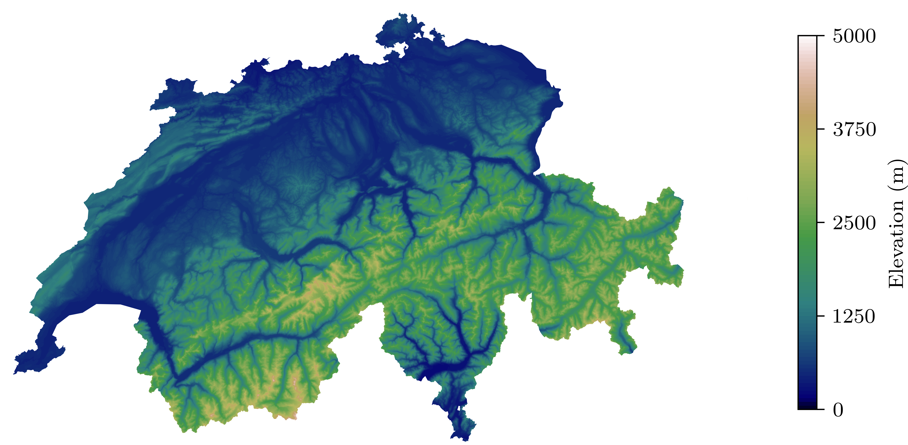
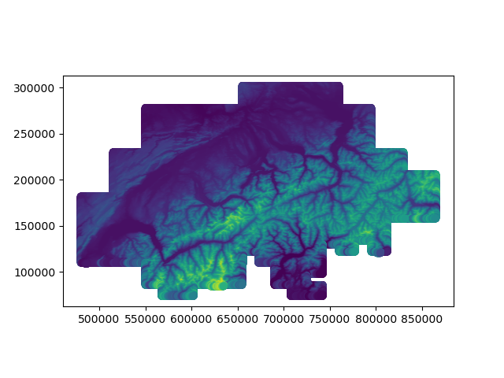

Topographic map of Switzerland

Introduction
Switzerland is well known for it’s mountains, covering roughly 70% of the country’s total area. L’Office fédéral de topographie (swisstopo) has increadibly high-resolution elevation data (grid with spacing 25x25 meters) for the country. This can be used to generate beautiful elevation plots, like the one on the cover of this post.
Requirements
For this, you will need:
- Python with
numpy,matplotlib,geopandasandshapely
Mapping the data
The data is freely available here in it’s rougher 200x200 m grid, which makes working with the data much easier. This data contains x,y,z coordinates of a mesh covering Switzerland and parts of the neighboring countries. The latitude (x) and longitude (y) are represented in the MN03/LV03 coordinate system. This coordinate system is centered around the old observatory of Bern, nowadays the location of the Institute of Exact Sciences of Bern University, in downtown Bern (Sidlerstrasse 5 - 46°57’3.9” N, 7°26’19.1” E). We could just plot the data as is, but because we are going to use a Geopandas later on to plot the country’s boundary, it is much more convenient to map the data into a more common space, the EPSG-4216 - WGS84.
Conversion between well-known coordinate systems can be performed directly in GeoPandas, unfortunately, the Swiss coordinate system is not so common, which means we have to map the data “by hand”. Approximate formulas for the transformation between Swiss projection coordinates and WGS84 can be found in the article referenced. These formulas take x, y' coordinates and height (z`) and map those onto longitude, latitudes, and elevation.
def MN03_to_WGS84(x,y,height):
""""
transform MN03/LV03 into WGS84
"""
x = (x - 200000)/1000000
y = (y - 600000)/1000000
lat = 16.9023892 + 3.238272 * x - 0.270978 * y**2 - 0.002528 * x**2 - 0.0447 * y**2 * x - 0.0140 * x**3
lon = 2.6779094 + 4.728982 * y + 0.791484 * y*x + 0.1306 * y * x**2 - 0.0436 * y**3
lat = lat * 100/36
lon = lon * 100/36
elev = elev + 49.55 - 12.60 * y - 22.64 * x
return lat, lon, elev
Now that we have this, we can load the .xyz data obtained from swisstopo, extract the relevant information, and map it into the WGS84 coordinate system.
# read elevation data
xyz_data = np.genfromtxt("DHM200.xyz")
# extract xyz data, MN03 NF02 coordinate system
x = xyz_data[:,1]
y = xyz_data[:,0]
height = xyz_data[:,2]
# transform manually
lat, lon, height = MN03_to_WGS84(x,y,height)
We could plot the data like this, but it doesn’t look very nice. We need to remove the parts of the data that fall outside of Switzerland.
 Figure 1: Topographic data.
Masking boundaries
To remove the elevation points that fall outside Switzerland, we can use the mask function of GeoPandas and use the Swiss boundary data to mask parts outside of the country. The shape files (.shp) that contain the polygon data can be found here. The data contains boundary data for Switzerland and part of the neighboring countries, we don’t need those, and we can simply drop them (stored at index 1,2,3). Then we need to map this data onto the WGS84 projection.
# Read file using gpd.read_file()
data = gpd.read_file("swissBOUNDARIES3D_1_3_TLM_LANDESGEBIET.shp")
data.drop([1,2,3], axis=0, inplace=True)
data = gpd.GeoSeries(data.geometry)
data = data.to_crs("EPSG:4326")
To mask the data, we will first create a Polygon that englobes the full dataset and the perform a boolean operation with the boundary data, such that only the parts outside Switzerland are masked.
# generate mask for Switzerland
mask = gpd.GeoSeries(Polygon([(min(lon),min(lat)),
(min(lon),max(lat)),
(max(lon),max(lat)),
(max(lon),min(lat))]), crs="EPSG:4326")
mask = mask.difference(data)
Plotting the data
We can now finally plot the data; here I use matplotlib for that. The elevation data is plotted with the tricontourf function that first generates a Delauney triangulation of the data and then interpolates the elevation data onto this triangular mesh. The mask data is applied as a subsequent white layer on the exterior of Switzerland, effectively masking the data that overfills the plot. Here I have deliberately clipped the elevation data between 0 and 5000 meters.
# plot contour
fig, ax = plt.subplots(1, 1, figsize=cm_(18,8))
cntr = ax.tricontourf(lon, lat, height, levels=np.linspace(0,5000,101), cmap="gist_earth")
fig.colorbar(cntr, ax=ax, shrink=0.84, ticks=np.linspace(0,5000,5), label="Elevation (m)")
# plot boundary
mask.plot(ax=ax, color="white")
plt.axis("off")
plt.show()
Figure 2: Topographic map of Switzerland.
The full script to load the data and generate the figure can be obtained below
data link
2023
Back to top ↑2021
Advanced Scientific Matplotlib - Part 1/n
This series of blog post is here to give some of the tricks I use to produce high-quality figures, suitable for publications.
2020
Compact Schemes for the Poisson Equation
If you prefer to follow in the notebook directly, you can also get the notebook.
APS-Division of Fluid Dynamics
Abstract and video of my talk at APS-DFD 2020
My First Post
Trying all that markdown has to offers